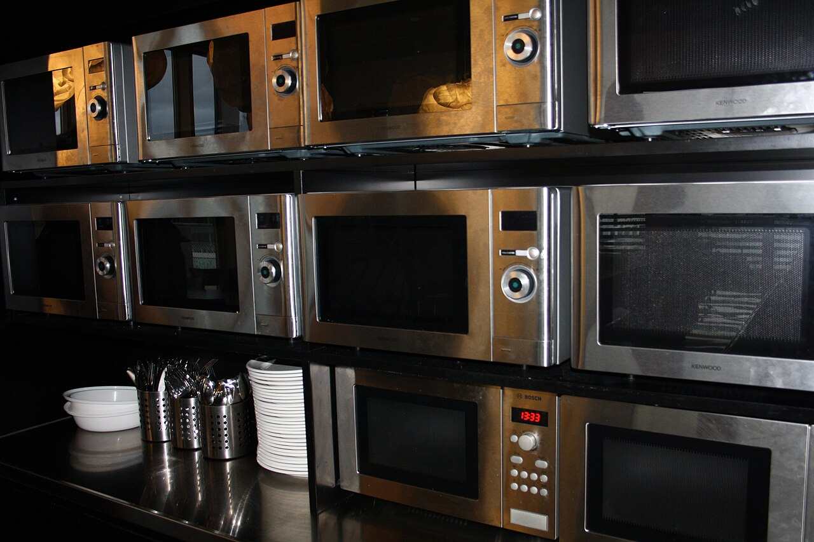
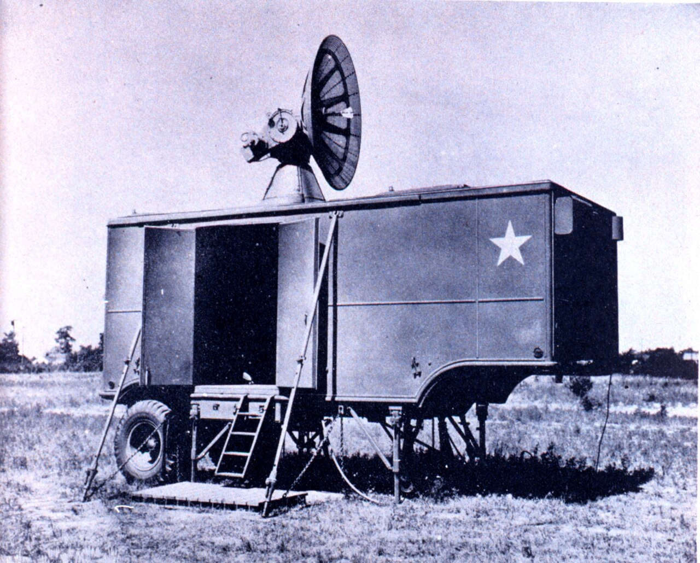
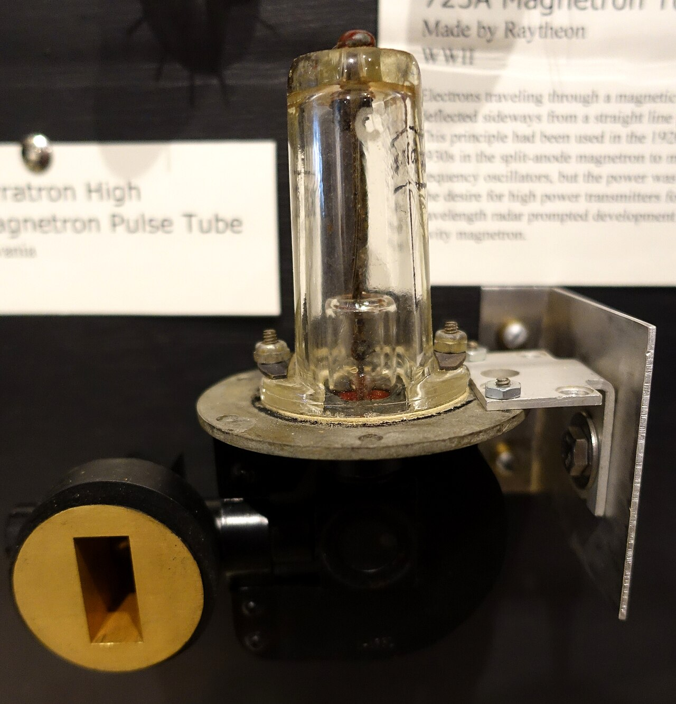
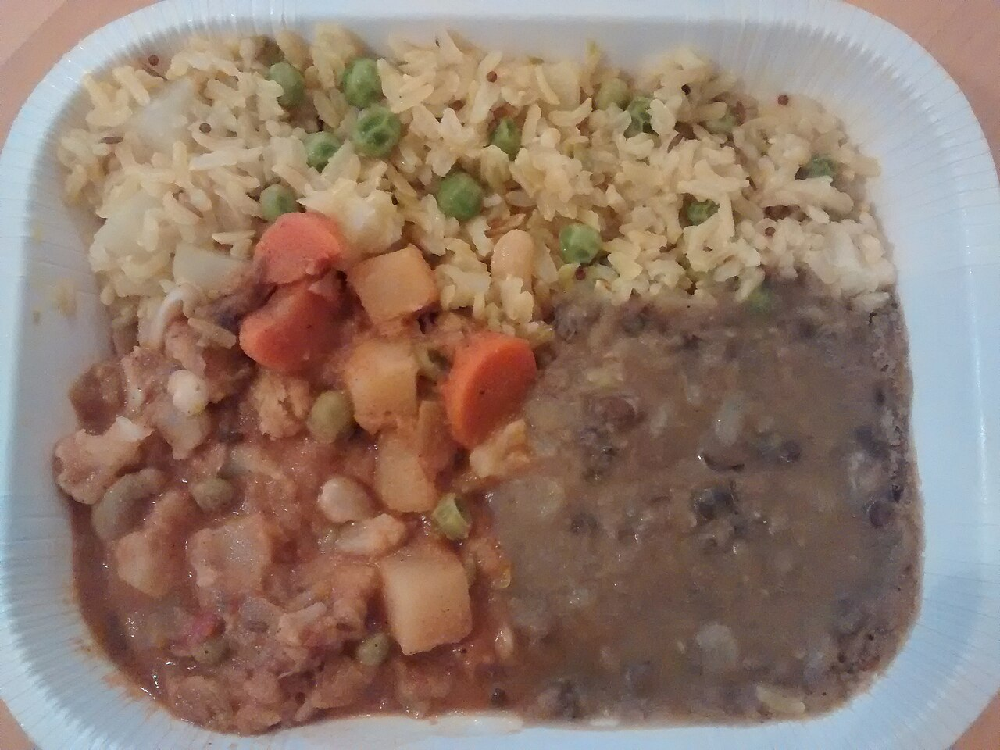
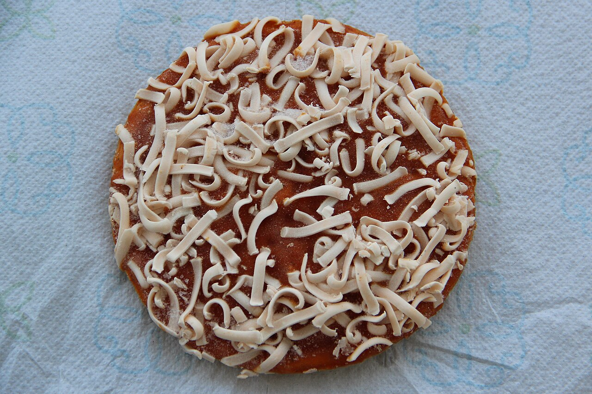
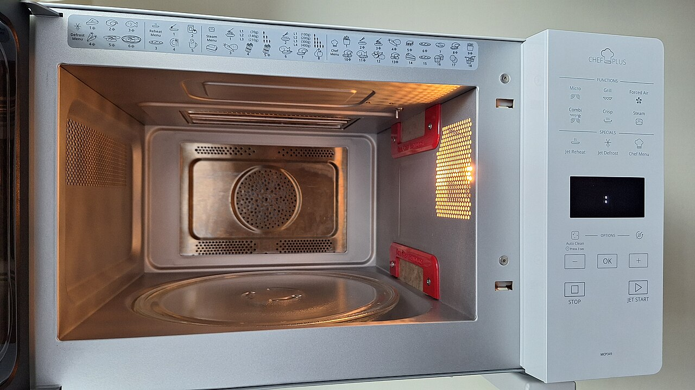
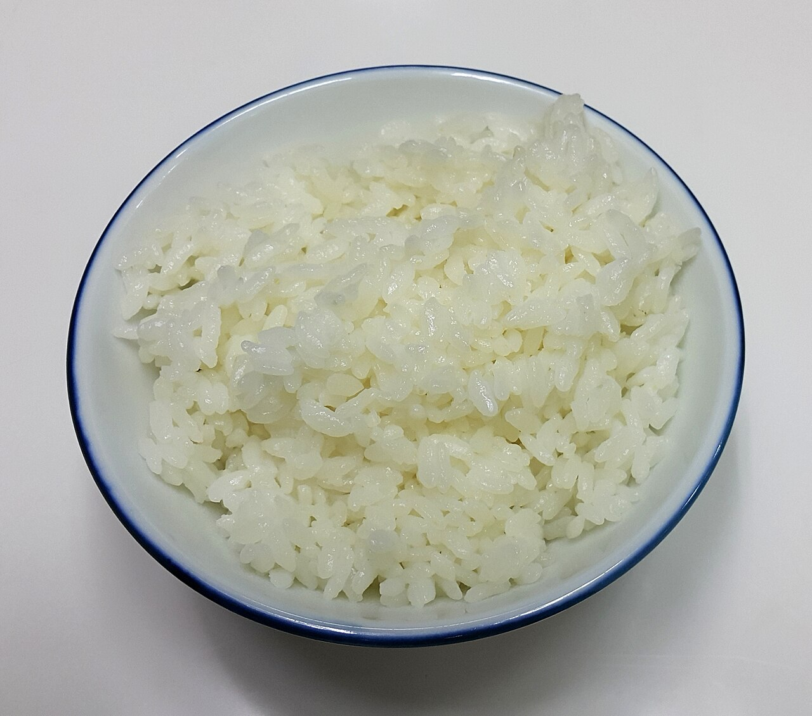

技術・発明 Technology電子レンジで 温めると、 なぜ真ん中だけ 冷たい？ 電子レンジは、食べ物を「中から」温めているわけではありません。マイクロ波が入りこめる深さを断面図で、冷凍の食べ物が温まっていく順番を模式図で、庫内にできる熱い場所と冷たい場所を波の図で見ていきます。真ん中まで温めるには、どうすればいいのでしょう？
2026.11.02 UP 約5分で読める 文：SOMOSOMO編集部
写真：Katsan 1, Open House Stockholm 2016／AleWi（2016年、CC0）
アメリカ、1945年10月8日。レーダーの部品を作っていた電機会社レイセオンが、マイクロ波で食べ物を加熱する方法の特許を出願しました。きっかけは、技術者パーシー・スペンサーが動いているレーダー装置のそばに立っていたとき、ポケットのお菓子がとけていたことだった、と伝えられています。
日本でも1961年に東芝が、翌1962年にシャープが電子レンジを売り出し、温め終わりの音から「チンする」という言葉まで生まれました。それから60年あまり。冷凍ご飯を温めると、今でも外は熱いのに、真ん中だけ冷たい ことがあります。なぜでしょうか。


電子レンジの先祖は、レーダー 左は、第二次世界大戦中のアメリカ軍の移動式レーダー SCR-584。波の長さ約10cmのマイクロ波を使い、電子レンジのマイクロ波（約12cm）とほぼ同じ長さです。右は、同じころにレイセオン社が作ったマグネトロン（マイクロ波を作る真空管）「725A」の展示です。写真：左 Exterior view of SCR-584 ／アメリカ陸軍航空軍（1945年、パブリックドメイン）、右 725A Magnetron Tube, Raytheon, World War II ／Daderot（2014年、CC0）
In a word
マイクロ波が表面から数cm でほぼ使いきられるから。
01
From the Outside In
電子レンジは、 外側しか 温めていない
食べ物の中の水の分子は、片側がプラス、反対側がマイナスの電気を少しずつ帯びています。マイクロ波が来ると、分子は向きが入れかわり続ける電気の力に合わせて、くるくると向きを変えようとします。このゆさぶりが、熱になります。
ところが、マイクロ波は食べ物の奥深くまでは入れません。表面の水に吸われながら進むので、奥へ行くほど弱まります。肉やジャガイモでは、表面から約1cmで強さが3分の1ほどに、3cmでは20分の1ほどに落ちます。
つまり、電子レンジが直接温めているのは、主に表面から1cmほどの外側です。「中から温める」というのは誤解で、厚い食べ物の真ん中は、温まった外側から熱がじわじわ伝わる「伝導」で温まります。この熱の伝わり方は、マイクロ波よりずっとゆっくりです。
Fig.01 マイクロ波が 届くのは外側だけ
食べ物の断面（模式図）
マイクロ波
マイクロ波
真ん中
熱が伝わるのを
待つだけ
赤い部分：マイクロ波が熱に変わる層（約1cm）
表面からの深さと、残るマイクロ波の強さ
表面
1cm
2cm
3cm
100%
37%
14%
5%
見どころは、下の棒の縮み方。肉などでは、表面から1cm進むごとに強さが約3分の1になります。3cmも入ると、ほとんど残りません（模式図。数字は肉・ジャガイモの値をもとにした目安）。

器の形が、温まり方を決める 電子レンジで温めた、容器入りの野菜のコルマ（インドのカレー料理）。具とご飯が平たく広げられています。厚みがうすいほど、真ん中も表面から近くなります。写真：Amy's Indian Vegetable Korma ／Mx. Granger（2015年、CC0）
02
Ice and Water
冷凍の食べ物は、 とけたところから 煮えていく
冷凍の食べ物では、真ん中の冷たさがもっとはっきりします。理由は、氷がマイクロ波をほとんど吸わないことです。氷の中の水の分子は、きっちり組み合わさって動けません。マイクロ波にゆさぶられても、向きを変えられないのです。
数字でくらべると、ちがいは歴然です。マイクロ波装置メーカーの表によると、常温の水では、マイクロ波は約1〜2cmで3分の1ほどに弱まります。ところが−12℃の氷では、同じだけ弱まるまでに約11m。窓ガラスを通る光のように、ほとんど素通りしてしまうのです。

凍ったままでは、マイクロ波はほぼ素通り 凍ったままの冷凍ピザ。チーズもソースも凍っているあいだは、マイクロ波をあまり吸いません。どこか一か所がとけたとたん、そこから急に温まりはじめます。写真：Frozen Celeste Pizza For One June 2018 ／Thomson200（2018年、CC0）
やっかいなのは、そのあとです。角やふちは2つの面からマイクロ波を受けるため、先にとけやすいといわれます。とけてできた水はマイクロ波をどんどん吸い、さらに熱くなります。熱くなればまわりの氷もとけ、また吸う。とけたところだけが加速して温まり、凍ったところは取り残されます。
食品の研究では、これを「ランナウェイ加熱（暴走する加熱）」と呼びます。電子レンジの解凍モードが弱い出力で止めたり動かしたりするのは、休んでいるあいだに熱を凍った部分へ伝え、暴走を防ぐためです。
Fig.02 冷凍の食べ物が温まっていく順番
① 温めはじめ
② とけはじめ
③ 温め続けると
全部が氷
角から
とける
氷
凍ったまま
とけた水
熱くなりすぎ
模式図。実際の形や温まり方は、食べ物によってちがう
見どころは、③の真ん中に残った小さな氷。外側が煮え立つほど熱くなっても、真ん中はまだ凍ったままのことがあります。②で角から先にとけるのは、2つの面からマイクロ波を受けるためといわれます。
03
Hot Spots
庫内には、 熱い場所と 冷たい場所が 並んでいる
電子レンジの中でマイクロ波を作っているのは、「マグネトロン」という真空管（空気を抜いた管の中で電子を飛ばす部品）です。家庭用のマイクロ波は、周波数（1秒間に波がくり返す回数）が約2.45GHz、つまり1秒に約24億5000万回。波の長さは約12cmです。この12cmが、庫内のむらを決めます。
むらの原因は、食べ物の中だけではありません。電子レンジの庫内は金属の壁で囲まれていて、マイクロ波は壁に当たってはね返ります。行きの波と帰りの波が重なると、強め合う場所と打ち消し合う場所が、その場から動かない模様になります。これを「定在波」といいます。
強め合う場所は、波の長さの半分ごとに並びます。電子レンジなら約6cmおき。ターンテーブル（回る皿）を外して板チョコを短く温めると、約6cmおきにとけた跡が並ぶことが、理科の実験として知られています。
Fig.03 庫内にできる「熱い場所」と「冷たい場所」
庫内を横から見た模式図
金属の壁
約6cm
熱い
冷たい
ターンテーブルが回ると、食べ物は
熱い場所と冷たい場所を順に通る
見どころは、交互に並ぶ赤い丸と白い丸。赤い丸は波が大きくゆれる「熱い場所」、白い丸はほとんどゆれない「冷たい場所」です。実際の庫内では、この模様が上下左右に立体的にできます（模式図）。
そこで多くの電子レンジは、食べ物のほうを動かします。ターンテーブルが回れば、食べ物は熱い場所と冷たい場所を順に通り、むらがならされます。シャープによると、同社は1966年、国産で初めてターンテーブルの付いた電子レンジを発売しました。
床が平らな「フラットテーブル」の電子レンジでは、庫内の底にあるアンテナが回ってマイクロ波をかきまぜ、模様のほうを動かします。ただ、どちらの方法でも、むらを完全には消せません。
とくにターンテーブルの回転の中心は、回っても場所がほとんど変わりません。中心に置いたものは熱い場所と冷たい場所を行き来できず、むらがならされないのです。そこがたまたま冷たい場所なら、冷たいまま残ります。

金属の壁が、マイクロ波をはね返す 扉を開けた電子レンジの庫内。壁は金属でできていて、マイクロ波は外に出ず、壁から壁へとはね返り続けます。この行き来が、熱い場所と冷たい場所の模様をつくります。床には、丸い皿が見えます。写真：20250928 Whirlpool microwave ／Rakoon（2025年、CC0）
04
Kitchen Tips
真ん中まで 温めたいなら、 真ん中を なくせばいい
しくみがわかれば、コツも見えてきます。考え方は2つ。マイクロ波が届く「表面から近い場所」を増やすことと、熱が真ん中へ伝わる時間をつくることです。
真ん中をあけて、 ドーナツ形に マイクロ波が届くのは表面から1cmほど。しくみから考えると、真ん中にくぼみや穴をあければ、どこも表面から近くなります。冷凍ご飯なら、平たくして真ん中を少しへこませて凍らせておくのも一案です。また、ターンテーブルの回転の中心をさけて少し外側に置くと、むらが減るとされます。
途中で一度まぜる・向きを変える 熱くなった外側と、冷たい真ん中を入れかえます。庫内の「熱い場所」に当たり続けていた部分も、場所が変わってならされます。
ふんわりラップやふたをする 食べ物から出た湯気を閉じこめると、湯気の熱が表面全体に回り、温まり方がそろいやすくなります。乾燥も防げます。
温め終わったら、少し置く 止めたあとも、熱は外側から真ん中へ伝わり続けます。数分置くだけで、温度のむらは小さくなります。

こんもり盛ると、真ん中が遠くなる 茶わんに盛った白いご飯（写真はイメージです）。ご飯の山の真ん中は、どの表面からも遠い場所です。冷凍ご飯の真ん中が冷たく残りやすいのは、そのためです。写真：A bowl of rice ／Douglas Perkins（2015年、CC0）
05
By the Numbers
数字で見る、電子レンジ
約 1cm 2.45GHzのマイクロ波が、肉やジャガイモの中で強さ約3分の1まで弱まる深さ。ここまでで約6割が熱に変わるPüschner の表（2.45GHz）
約 11m 同じだけ弱まるまでに、−12℃の氷の中をマイクロ波が進む距離。常温の水（約1〜2cm）の数百倍Püschner の表（2.45GHz）
約 6cm 庫内で「熱い場所」が並ぶ間隔。マイクロ波の波の長さ（約12cm）のちょうど半分アリゾナ大学 光科学部
Here's the Fun Part
ここが面白い！電子レンジは、 わざと 「水が吸いきれない」 マイクロ波を 使っている
電子レンジの2.45GHzは、「水の分子にぴったり合わせた特別な周波数」と説明されることがあります。でも、これは誤解です。水がマイクロ波をいちばんよく吸うのは、2.45GHzよりずっと高い周波数 で、約10GHzが目安です。
それなら、もっと水がよく吸う周波数にすれば早く温まりそうです。ところが、そうはなりません。よく吸われるマイクロ波ほど、表面のごく薄い層で使いきられてしまい、真ん中にはますます届かなくなるからです。外は焦げ、中は冷たいまま。
2.45GHzが選ばれた理由には、電子レンジなどに使ってよい電波の帯が世界で決められていることや、部品の値段もあります。それでも結果として、電子レンジは水に「ほどほどに」吸われ、そのぶん奥まで入りこめるマイクロ波 を使っています。真ん中の冷たさは、これでも抑えられたほうなのです。
次に冷凍ご飯の真ん中が冷たかったら、ご飯の山の高さを見てみてください。マイクロ波が届くのは、表面からたった1cmほど。その奥は、熱が歩いて届くのを待っている場所です。
出典・参考
Microwave oven （Wikipedia 英語版）：家庭用は約2.45GHz・波長約12.2cm、多くの食品でマイクロ波が入るのは約1cmで内側は伝導で温まること、「中から温める」「水の共鳴」は誤解であること、周波数は規制と費用で選ばれること、氷は液体の水より温まりにくく解凍は弱い出力で伝導の時間をとること、ターンテーブルと反射板（スターラー）、食べ物をターンテーブルの中央からずらして置くと温まり方がそろいやすいこと（"heating can be more even if food is not centered on the turntable tray"）、まぜる・置く時間、1945年10月8日のレイセオンの特許出願Percy Spencer （Wikipedia 英語版）：レーダー装置のそばでポケットのお菓子がとけたという話（伝説とされる）Dielectric heating （Wikipedia 英語版）：水の分子が電場に合わせて向きを変えようとして熱が出ること、電子レンジは水がもっともよく吸う周波数に合わせておらず、合わせると外側の層ですべて吸われてしまうこと、2.45GHzはより奥まで届くこと、水がもっともよく吸う周波数は約10GHzであることPenetration Depths （Püschner、マイクロ波装置メーカーの技術解説）：2.45GHzでの浸透の深さ（強さが表面の37%になる深さ）。水約1.4cm、−12℃の氷1,100cm、生のジャガイモ0.9cm、肉0.9〜1.2cm（本文の水の値は、温度による差を見こんで「約1〜2cm」とした）。強さが37%になるまでに約6割（63%）が吸われて熱に変わる食品の誘電物性とマイクロ波加熱 （酒井昇、日本食品工学会誌 11巻1号 19–30頁、2010年、DOI 10.11301/jsfe.11.19）：凍った状態ととけた状態で誘電特性（マイクロ波の吸いやすさ）が大きくちがい、解凍が不均一になる「ランナウェイ加熱」が起きることMeasure the Speed of Light with a Microwave （アリゾナ大学 光科学部アウトリーチ）：ターンテーブルを外して温めると、とけた跡が波長の半分（約6cm）おきに並ぶことSCR-584 radar （Wikipedia 英語版）：2,700〜2,800MHz（波長10〜11cm）のマイクロ波を使い、空洞マグネトロンで出力を得た第二次世界大戦のレーダーSharp History Chronology 1961–1970 （シャープ）：1962年に電子レンジ R-10 を発売、1966年に同社が国産初とするターンテーブル付き電子レンジ R-600 を発売電子レンジの歴史 （東芝ライフスタイル）：1959年に国産第1号の電子レンジ（業務用）を完成し、1961年に市販第1号機を発売したことちん （デジタル大辞泉、コトバンク）：電子レンジで食品を加熱することを俗に「ちん」といい、調理が終わったときに鳴る音に由来すること電子レンジの「ターンテーブル式」「フラットテーブル式」はどちらがおすすめ？ （All About）：フラットテーブル式では庫内の底のアンテナが回ってマイクロ波を広げることMicrowave Food Safety （クレムソン大学 家庭園芸情報センター）：まんべんなく並べる、ふたで湯気を閉じこめる、途中でまぜる・向きを変える、温めたあと数分置くと熱が行きわたること、冷たい場所（コールドスポット）写真：すべて CC0 またはパブリックドメイン。クレジットはそれぞれの写真の下に記しています。扉：Katsan 1, Open House Stockholm 2016, bild 31 ／AleWi（2016年、CC0）